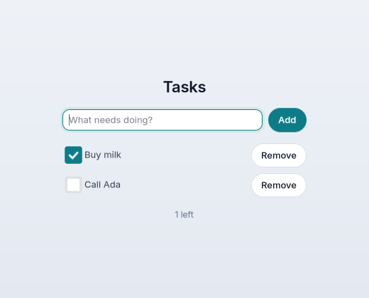
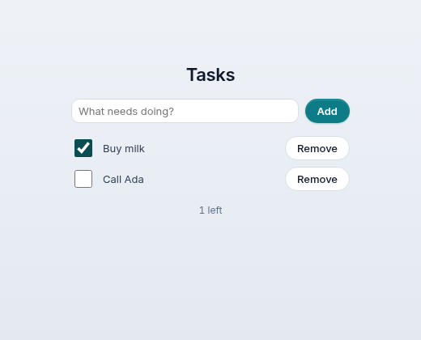

Build a todo app.
A list that grows as you type, a checkbox on every task, and tasks that are still there tomorrow, kept in SQLite. One file, about 110 lines. After your first app.
Tasks. Three new ideas.
The app is already in the repository, in examples/tasks/; this page goes through it part by part. Every code block here is that file's own text, and a check fails if they ever differ.
The view is a loop
The screen has one row per task. view builds the rows in a plain for loop, so the list is always exactly the data.
One number says what and which
Every row's checkbox and button send a message number that holds the task's id, so update knows which task was tapped.
SQLite, in a few lines
mojoui.sqlite opens a database file and runs SQL. Close the app, open it again: your tasks are where you left them.


The tasks. A struct and a table.
The imports: the components from mojoui, Checkbox from mojoui.overlays, and the two helpers and the database for step 1's second half. The theme is the first tutorial's.
The messages come next: plain numbers, one for each thing that can happen. TYPING and ADD are the field and the Add button.
TICK and REMOVE are bases. Ticking task 7 sends TICK + 7; update subtracts the base to get the 7 back. Ids stay below a million, so the two ranges never meet.
A Task is a struct with three fields. @fieldwise_init writes its constructor, so Task(7, "Buy milk", False) just works.
from mojoui import App, Event, View, VStack, HStack, Text, Button, TextField, TITLE, CAPTION, PROMINENT from mojoui.overlays import Checkbox from mojoui.files import config_dir from mojoui.shared import make_dir from mojoui.sqlite import Database from mojoui.theme import Theme from themes.liquid import liquid comptime TYPING = 1 comptime ADD = 2 comptime TICK = 1_000_000 # TICK + a task's id: its box was ticked or cleared comptime REMOVE = 2_000_000 # REMOVE + a task's id: its Remove button @fieldwise_init struct Task(Copyable, Movable): var id: Int var title: String var done: Bool
The database is the truth. open_db opens the file (SQLite makes it the first time) and makes the table if it isn't there yet.
The file goes in the app's settings folder, ~/.config/tasks/; config_dir picks it, and the checks point it somewhere temporary with OMX_CONFIG.
load reads every task back. prepare makes a statement, step moves to the next row, and int and text read its columns.
Both say raises: SQLite can fail (a full disk, a locked file), and Mojo makes you say so.
def open_db() raises -> Database: make_dir(config_dir("tasks")) var db = Database(config_dir("tasks") + "/tasks.db") db.exec("CREATE TABLE IF NOT EXISTS tasks(id INTEGER PRIMARY KEY, title TEXT, done INTEGER)") return db^ def load(db: Database) raises -> List[Task]: var tasks = List[Task]() var q = db.prepare("SELECT id, title, done FROM tasks ORDER BY id") while q.step(): tasks.append(Task(q.int(0), q.text(1), q.int(2) == 1)) return tasks^
The state. What the screen needs.
The app keeps three things: the tasks it last read, what's typed in the field so far, and a problem to show if the database failed.
__init__ can't raise, because an app has to start. So it tries to load, and if that fails it keeps SQLite's message and shows it instead of crashing. The try is how Mojo catches a raises.
title and theme are as in the first tutorial: the window's name and the Liquid look.
struct Main(App): var tasks: List[Task] var draft: String var problem: String def __init__(out self): self.tasks = List[Task]() self.draft = "" self.problem = "" try: self.tasks = load(open_db()) except e: self.problem = String(e)
The screen. A loop makes the list.
The rows: one HStack per task, a checkbox and a Remove button side by side. The checkbox sends TICK + t.id; the button sends REMOVE + t.id.
.grow() lets the checkbox take the spare width, which pushes Remove to the right edge; .fill() makes the row as wide as the column.
.tooltip says which task a Remove button is for. A person sees it on hover, a screen reader says it, and an agent reads it (step 7).
The page: a title, the field with its Add button, the rows, and a count of what's left. The field sends TYPING as you type and ADD when you press Return. The ^ in rows^ hands the list over instead of copying it.
def view(self) -> View: var rows = List[View]() var left = 0 for t in self.tasks: if not t.done: left += 1 rows.append(HStack( Checkbox(t.title, t.done, on_toggle=TICK + t.id).grow(), Button("Remove", on_tap=REMOVE + t.id).tooltip("Remove " + t.title), ).fill()) if len(rows) == 0: rows.append(Text("Nothing to do yet", style=CAPTION)) if self.problem != "": rows.append(Text(self.problem, style=CAPTION)) return VStack( Text("Tasks", style=TITLE), HStack( TextField(self.draft, placeholder="What needs doing?", on_change=TYPING, on_submit=ADD).grow(), Button("Add", on_tap=ADD, style=PROMINENT), ).fill(), VStack(rows^, spacing=8).fill(), Text(String(left) + " left", style=CAPTION), spacing=16, ).padding(8).width(360)
What happens. Change the table, read it back.
Typing only keeps the text. Nothing is saved until Add.
Add, Remove and a tick each run one SQL statement. The ? marks are filled in by bind, never pasted into the SQL, so a task called '); DROP TABLE tasks; -- is just a task.
A checkbox's message carries its new state in event.number: 1 when ticked, 0 when cleared. That goes straight into the done column.
Then load reads the table again, and the screen follows. There's one source of truth, so the screen and the file can't drift apart. Remove is checked before Tick because its numbers are bigger.
def update(mut self, event: Event): var m = event.message if m == TYPING: self.draft = event.text return self.problem = "" try: var db = open_db() if m == ADD: var title = String(self.draft.strip()) if title != "": var add = db.prepare("INSERT INTO tasks(title, done) VALUES (?, 0)") add.bind(1, title) add.run() self.draft = "" elif m >= REMOVE: var remove = db.prepare("DELETE FROM tasks WHERE id = ?") remove.bind(1, m - REMOVE) remove.run() elif m >= TICK: var tick = db.prepare("UPDATE tasks SET done = ? WHERE id = ?") tick.bind(1, event.number) tick.bind(2, m - TICK) tick.run() self.tasks = load(db) except e: self.problem = String(e)
Build it. Run it. Close it, open it again.
The same commands as the first app, with its folder's name. Add a few tasks, tick one, close the window, and run it again: they come back from ~/.config/tasks/tasks.db.
The web build keeps its tasks in the same kind of file, on the machine that runs the server.
Mac: scripts/build.sh tasks mac cross-builds it. This app hasn't run on a Mac yet, and the Mac's layout is still being fixed (as in the first tutorial).
scripts/build.sh tasks linux build/tasks/linux/tasks # a native window scripts/build.sh tasks web pixi run python mojoui/hosts/web.py build/tasks/web # → http://127.0.0.1:5001
Test it. The real widgets, no window.
Every omxcode app has a test mode. You give it steps; it presses the real GTK widgets (or the real page, in Chromium), then prints what each one shows and quits.
MOJOUI_TEST holds the steps, split by ;. type: finds a field by its placeholder, tap: a button by its title, submit: presses Return, toggle: ticks a checkbox.
scripts/drive.py runs the same steps on the web build, in a browser with no window, and prints the same lines. When the two outputs match, the app behaves the same on both.
OMX_CONFIG keeps the test's database away from your real tasks.
Without a display (a server, a CI machine), the checks start a private one with scripts/headless.py.
export OMX_CONFIG=$(mktemp -d) MOJOUI_TEST="type:What needs doing?=Buy milk;tap:Add;\ type:What needs doing?=Call Ada;submit:What needs doing?;\ toggle:Buy milk" build/tasks/linux/tasks LABEL: Tasks FIELD: BUTTON: Add CHECK: Buy milk=on BUTTON: Remove CHECK: Call Ada=off BUTTON: Remove LABEL: 1 left pixi run python scripts/drive.py build/tasks/web "…the same steps…" # the same lines, from Chromium
The output is trimmed: both also print a few lines about the host (its version, the theme, fonts).
An agent keeps your list. Still no extra code.
As in the first tutorial, scripts/agent.sh tasks gives the app to an MCP client. The field, the checkboxes and the buttons become its tools, and the tools change as the list does.
Typing into the field with submit adds a task, and the agent is told about the tools that came with it: one checkbox and one Remove per task.
Two buttons are both called "Remove", so they're named remove and remove-2. The tooltip from step 3 is what tells the agent which is which.
A checkbox's tool needs on: the agent says what it wants, not "flip it", so calling it twice does no harm. Calling it without on is refused.
what-needs-doing text="Buy milk" submit=true Did what-needs-doing. Now: 1 left Tools now 4; new: buy-milk, remove what-needs-doing text="Call Ada" submit=true Did what-needs-doing. Now: 2 left Tools now 6; new: call-ada, remove-2 buy-milk ValueError: buy-milk needs "on" buy-milk on=true Did buy-milk. Now: 1 left screen Tasks · design: Liquid · 6 tools on this screen "Tasks" Field "" (placeholder "What needs doing?") → what-needs-doing Button "Add" → add Checkbox "Buy milk" = on → buy-milk Button "Remove" (Remove Buy milk) → remove Checkbox "Call Ada" = off → call-ada Button "Remove" (Remove Call Ada) → remove-2 "1 left"
Real output from scripts/agent_client.py, the small MCP client the checks use; the screen's list of tools is left off.
Where to go from here.
More todo
examples/todo: filters with a dropdown, Clear done, a progress bar, a scrolling list.
A notes app
examples/jot: SQLite with full-text search as you type, and saving a moment after you stop.
Components
Every one, from buttons to data grids, charts and maps, with what runs where.
Agents build screens
An AG-UI agent answers with maps, charts and forms, drawn natively.